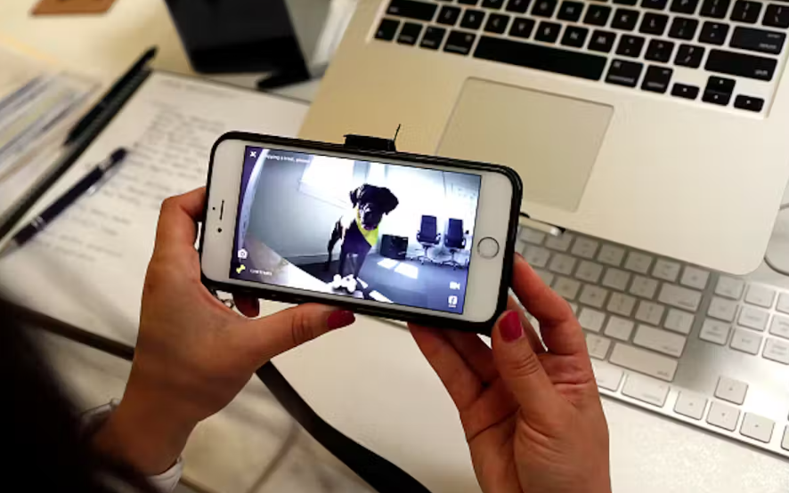

How will AI affect workers? Tech waves of the past show how unpredictable the path can be
The explosion of interest in artificial intelligence has drawn attention not only to the astonishing capacity of algorithms to mimic humans but to the reality that these algorithms could displace many humans in their jobs. The economic and societal consequences could be nothing short of dramatic. The route to this economic transformation is through the workplace. A widely circulated Goldman Sachs study anticipates that about two-thirds of current occupations over the next decade could be affected and a quarter to a half of the work people do now could be taken over by an algorithm. Up to 300 million jobs worldwide could be affected. The consulting firm McKinsey released its own study predicting an AI-powered boost of US$4.4 trillion to the global economy every year. The implications of such gigantic numbers are sobering, but how reliable are these predictions? I lead a research program called Digital Planet that studies the impact of digital technologies on lives and livelihoods around the world and how this impact changes over time. A look at how previous waves of such digital technologies as personal computers and the internet affected workers offers some insight into AI’s potential impact in the years to come. But if the history of the future of work is any guide, we should be prepared for some surprises. The IT revolution and the productivity paradox A key metric for tracking the consequences of technology on the economy is growth in worker productivity – defined as how much output of work an employee can generate per hour. This seemingly dry statistic matters to every working individual, because it ties directly to how much a worker can expect to earn for every hour of work. Said another way, higher productivity is expected to lead to higher wages. Generative AI products are capable of producing written, graphic and audio content or software programs with minimal human involvement. Professions such as advertising, entertainment and creative and analytical work could be among the first to feel the effects. Individuals in those fields may worry that companies will use generative AI to do jobs they once did, but economists see great potential to boost productivity of the workforce as a whole.
The Goldman Sachs study predicts productivity will grow by 1.5% per year because of the adoption of generative AI alone, which would be nearly double the rate from 2010 and 2018. McKinsey is even more aggressive, saying this technology and other forms of automation will usher in the “next productivity frontier,” pushing it as high as 3.3% a year by 2040. That sort of productivity boost, which would approach rates of previous years, would be welcomed by both economists and, in theory, workers as well. If we were to trace the 20th-century history of productivity growth in the U.S., it galloped along at about 3% annually from 1920 to 1970, lifting real wages and living standards. Interestingly, productivity growth slowed in the 1970s and 1980s, coinciding with the introduction of computers and early digital technologies. This “productivity paradox” was famously captured in a comment from MIT economist Bob Solow: You can see the computer age everywhere but in the productivity statistics.
Digital technology skeptics blamed “unproductive” time spent on social media or shopping and argued that earlier transformations, such as the introductions of electricity or the internal combustion engine, had a bigger role in fundamentally altering the nature of work. Techno-optimists disagreed; they argued that new digital technologies needed time to translate into productivity growth, because other complementary changes would need to evolve in parallel. Yet others worried that productivity measures were not adequate in capturing the value of computers. For a while, it seemed that the optimists would be vindicated. In the second half of the 1990s, around the time the World Wide Web emerged, productivity growth in the U.S. doubled, from 1.5% per year in the first half of that decade to 3% in the second. Again, there were disagreements about what was really going on, further muddying the waters as to whether the paradox had been resolved. Some argued that, indeed, the investments in digital technologies were finally paying off, while an alternative view was that managerial and technological innovations in a few key industries were the main drivers. Regardless of the explanation, just as mysteriously as it began, that late 1990s surge was short-lived. So despite massive corporate investment in computers and the internet – changes that transformed the workplace – how much the economy and workers’ wages benefited from technology remained uncertain. Early 2000s: New slump, new hype, new hopes While the start of the 21st century coincided with the bursting of the so-called dot-com bubble, the year 2007 was marked by the arrival of another technology revolution: the Apple iPhone, which consumers bought by the millions and which companies deployed in countless ways. Yet labor productivity growth started stalling again in the mid-2000s, ticking up briefly in 2009 during the Great Recession, only to return to a slump from 2010 to 2019.

Throughout this new slump, techno-optimists were anticipating new winds of change. AI and automation were becoming all the rage and were expected to transform work and worker productivity. Beyond traditional industrial automation, drones and advanced robots, capital and talent were pouring into many would-be game-changing technologies, including autonomous vehicles, automated checkouts in grocery stores and even pizza-making robots. AI and automation were projected to push productivity growth above 2% annually in a decade, up from the 2010-2014 lows of 0.4%. But before we could get there and gauge how these new technologies would ripple through the workplace, a new surprise hit: the COVID-19 pandemic. The pandemic productivity push – then bust Devastating as the pandemic was, worker productivity surged after it began in 2020; output per hour worked globally hit 4.9%, the highest recorded since data has been available. Much of this steep rise was facilitated by technology: larger knowledge-intensive companies – inherently the more productive ones – switched to remote work, maintaining continuity through digital technologies such as videoconferencing and communications technologies such as Slack, and saving on commuting time and focusing on well-being. While it was clear digital technologies helped boost productivity of knowledge workers, there was an accelerated shift to greater automation in many other sectors, as workers had to remain home for their own safety and comply with lockdowns. Companies in industries ranging from meat processing to operations in restaurants, retail and hospitality invested in automation, such as robots and automated order-processing and customer service, which helped boost their productivity. But then there was yet another turn in the journey along the technology landscape. The 2020-2021 surge in investments in the tech sector collapsed, as did the hype about autonomous vehicles and pizza-making robots. Other frothy promises, such as the metaverse’s revolutionizing remote work or training, also seemed to fade into the background. In parallel, with little warning, “generative AI” burst onto the scene, with an even more direct potential to enhance productivity while affecting jobs – at massive scale. The hype cycle around new technology restarted. Looking ahead: Social factors on technology’s arc Given the number of plot twists thus far, what might we expect from here on out? Here are four issues for consideration. First, the future of work is about more than just raw numbers of workers, the technical tools they use or the work they do; one should consider how AI affects factors such as workplace diversity and social inequities, which in turn have a profound impact on economic opportunity and workplace culture. For example, while the broad shift toward remote work could help promote diversity with more flexible hiring, I see the increasing use of AI as likely to have the opposite effect. Black and Hispanic workers are overrepresented in the 30 occupations with the highest exposure to automation and underrepresented in the 30 occupations with the lowest exposure. While AI might help workers get more done in less time, and this increased productivity could increase wages of those employed, it could lead to a severe loss of wages for those whose jobs are displaced. A 2021 paper found that wage inequality tended to increase the most in countries in which companies already relied a lot on robots and that were quick to adopt the latest robotic technologies. Second, as the post-COVID-19 workplace seeks a balance between in-person and remote working, the effects on productivity – and opinions on the subject – will remain uncertain and fluid. A 2022 study showed improved efficiencies for remote work as companies and employees grew more comfortable with work-from-home arrangements, but according to a separate 2023 study, managers and employees disagree about the impact: The former believe that remote working reduces productivity, while employees believe the opposite. Third, society’s reaction to the spread of generative AI could greatly affect its course and ultimate impact. Analyses suggest that generative AI can boost worker productivity on specific jobs – for example, one 2023 study found the staggered introduction of a generative AI-based conversational assistant increased productivity of customer service personnel by 14%. Yet there are already growing calls to consider generative AI’s most severe risks and to take them seriously. On top of that, recognition of the astronomical computing and environmental costs of generative AI could limit its development and use. Finally, given how wrong economists and other experts have been in the past, it is safe to say that many of today’s predictions about AI technology’s impact on work and worker productivity will prove to be wrong as well. Numbers such as 300 million jobs affected or $4.4 trillion annual boosts to the global economy are eye-catching, yet I think people tend to give them greater credibility than warranted. Also, “jobs affected” does not mean jobs lost; it could mean jobs augmented or even a transition to new jobs. It is best to use the analyses, such as Goldman’s or McKinsey’s, to spark our imaginations about the plausible scenarios about the future of work and of workers. It’s better, in my view, to then proactively brainstorm the many factors that could affect which one actually comes to pass, look for early warning signs and prepare accordingly. The history of the future of work has been full of surprises; don’t be shocked if tomorrow’s technologies are equally confounding.